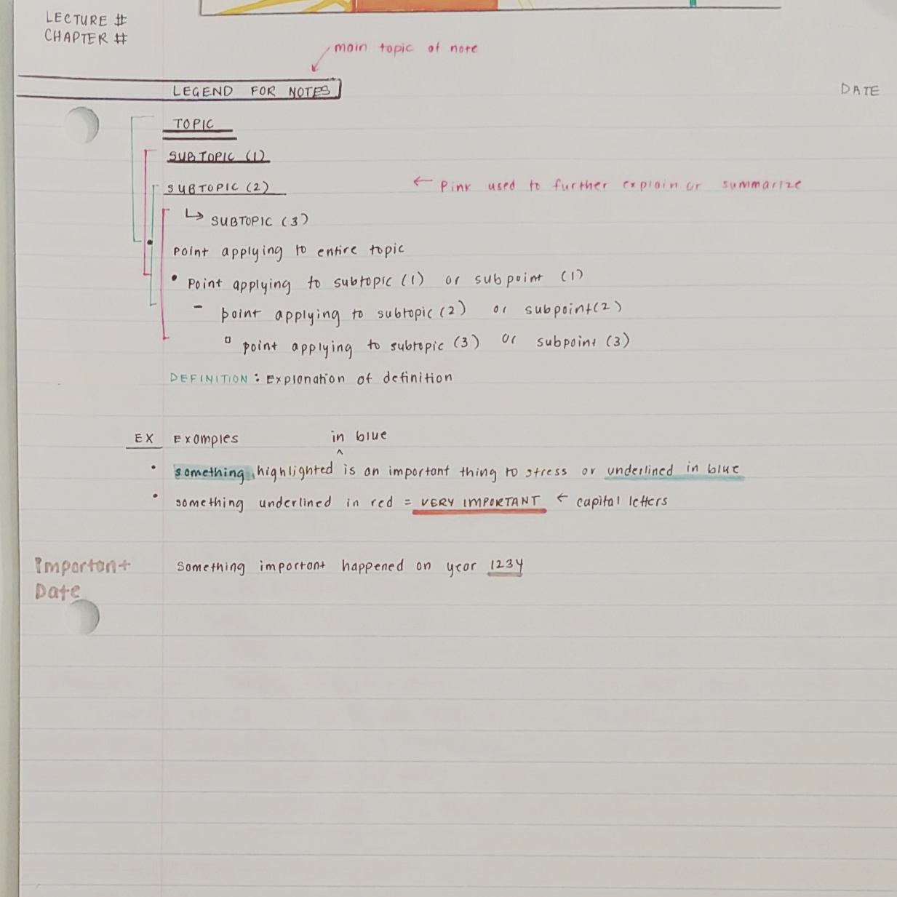
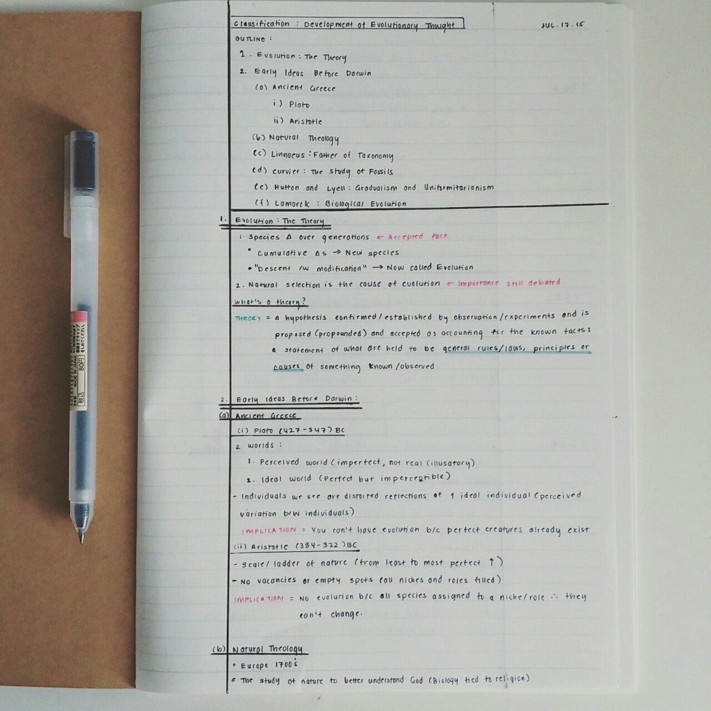
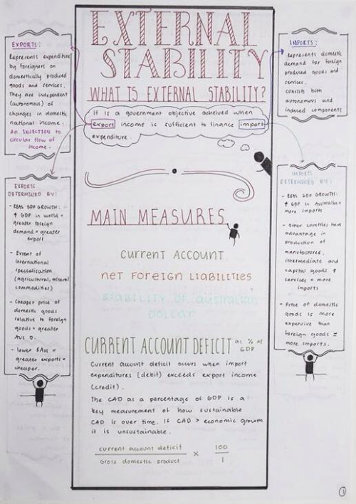
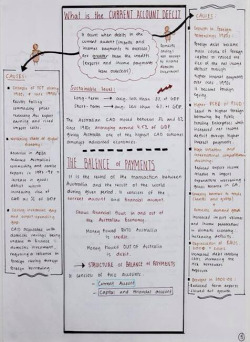
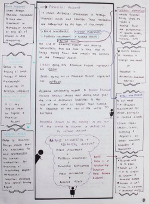
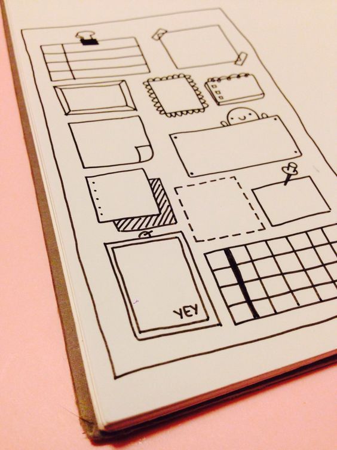
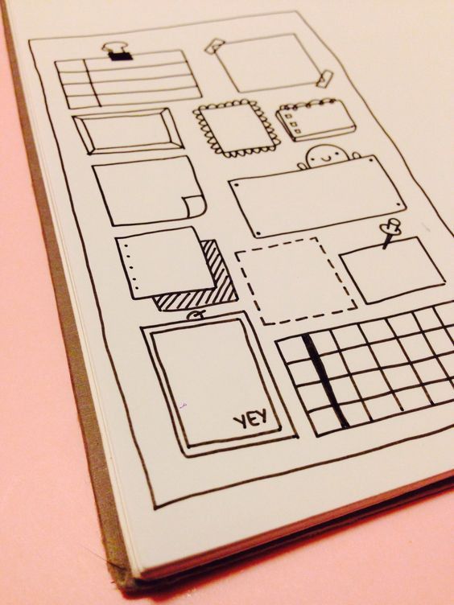

Studious
- What Is This?
- Inspiration
- Advice
- Staying Calm
- Note Taking
- Home
Here are some ways to organize the countless information you encounter inside and outside of class so you will actually go back to them and understand what you wrote. Everyone takes notes differently, and this will hopefully teach you what method works best for you.

You can have varying levels of organization, as shown on the left...



...use the Margin Method, where bigger ideas are deconstructed to the sides of the paper...
...use the Leitner Method...
Where you put flash cards you answer correctly in a separate pile from cards you answer incorrectly. You then review the correct pile half as often as the incorrect pile. If you answer a card from the correct pile incorrectly, put it back in the incorrect pile. Repeat for 2+ weeks!
Why the Leitner Method? Studies have shown prompting yourself for information rather than reviewing it yields better rates of recall. Basically, quizzing yourself is better than reviewing your notes. The Leitner method tries to optimize the rates/times you review information, prompting you to recall the stuff that slips your memory more often than the stuff you've got down pat.

Tip 1: Use a limited amount of color
When I take notes I only use three colors. Two similar colors and one that is complimentary. I keep the colors limited so that it’s easy to identify key points on my notes.
Tip 2: Writing out your notes
I choose one of the similar colors to be my main color where I write down facts and principles. I choose the other similar color to write out starting questions. Below, I use a dark blue to write out my main notes on the right column, and the light blue for starting questions on the left column. On the right column I use the light blue for anything that needs to stand out, like important vocab.
Tip 3: Charts and graphs
For charts and graphs I use the two similar colors together, but you can always use more colors on more detailed charts, graphs etc.

 
